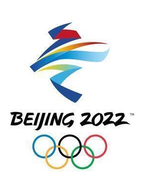
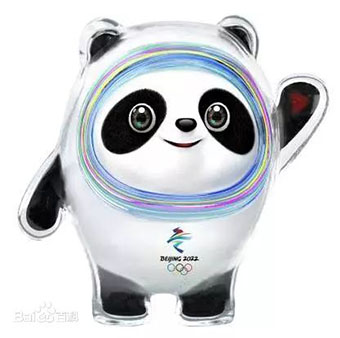

冬奥知识科普
距冬奥开始还有
|
2022北京冬奥会会徽以汉字“冬”为灵感来源，运用中国书法的艺术形态，将厚重的东方文化底蕴与国际化的现代风格融为一体，呈现出新时代的中国新形象、新梦想，传递出新时代中国为办好北京冬奥会，圆冬奥之梦，实现“三亿人参与冰雪运动”目标，圆体育强国之梦，推动世界冰雪运动发展，为国际奥林匹克运动做出新贡献的不懈努力和美好追求。会徽图形上半部分展现滑冰运动员的造型，下半部分表现滑雪运动员的英姿。中间舞动的线条流畅且充满韵律，代表举办地起伏的山峦、赛场、冰雪滑道和节日飘舞的丝带，为会徽增添了节日喜庆的视觉感受，也象征着北京冬奥会将在中国春节期间举行。会徽以蓝色为主色调，寓意梦想与未来，以及冰雪的明亮纯洁。红黄两色源自中国国旗，代表运动的激情、青春与活力。在“BEIJING 2022”字体的形态上汲取了中国书法与剪纸的特点，增强了字体的文化内涵和表现力，也体现了与会徽图形的整体感和统一性。 |
 |
|
北京冬奥会吉祥物“冰墩墩”以熊猫为原型进行设计创作。将熊猫形象与富有超能量的冰晶外壳相结合，体现了冬季冰雪运动和现代科技特点。头部外壳造型取自冰雪运动头盔，装饰彩色光环，其灵感源自于北京冬奥会的国家速滑馆——“冰丝带”，流动的明亮色彩线条象征着冰雪运动的赛道和5G高科技；左手掌心的心形图案，代表着主办国对全世界朋友的热情欢迎。整体形象酷似航天员，寓意创造非凡、探索未来，体现了追求卓越、引领时代，以及面向未来的无限可能。 |
; |  |